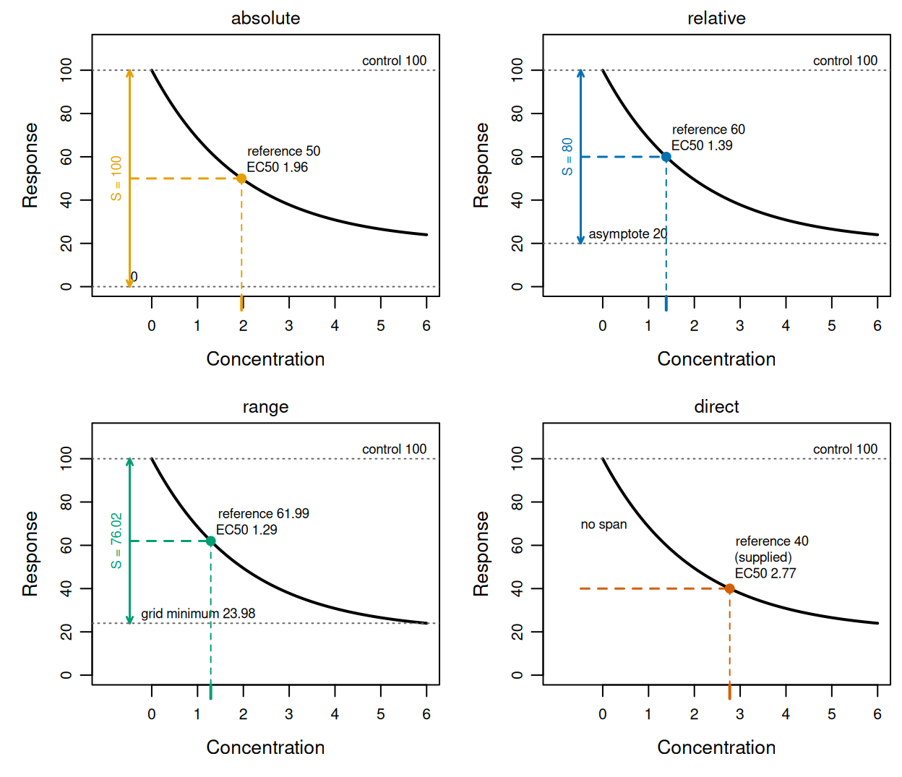
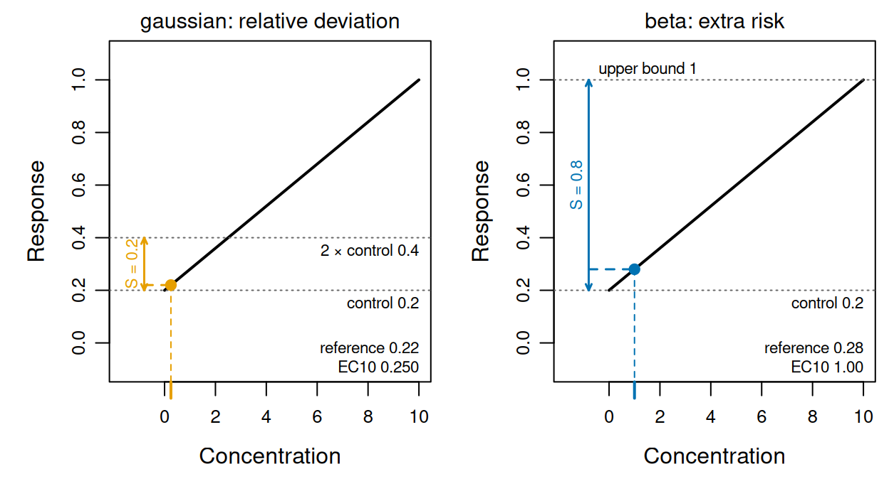
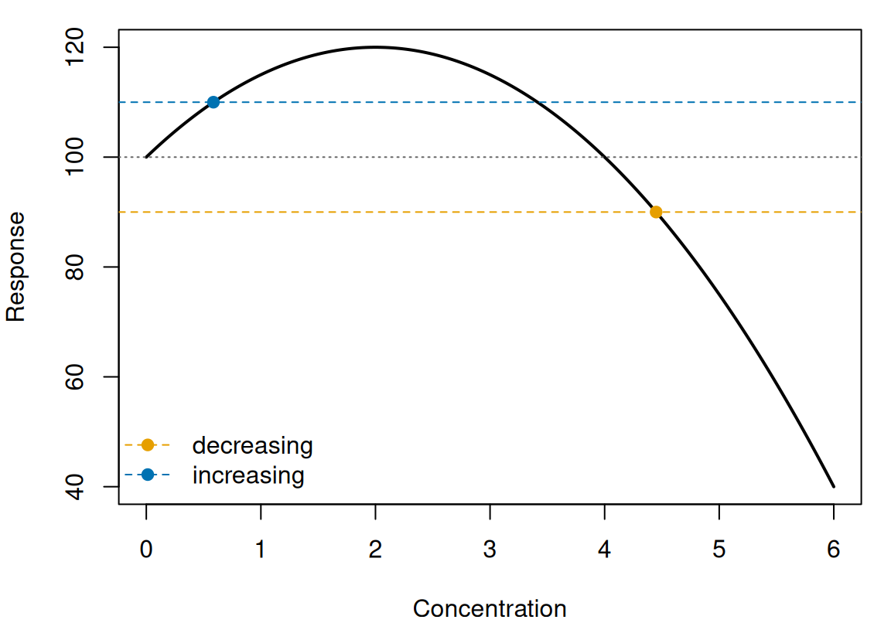
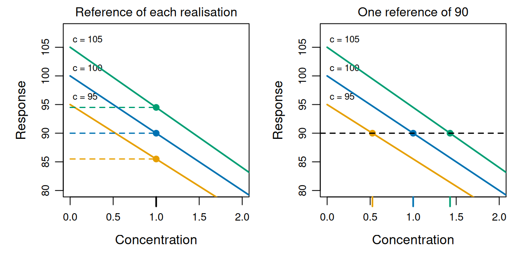
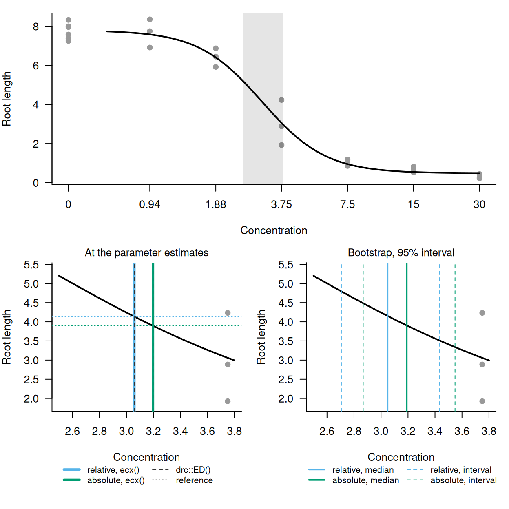
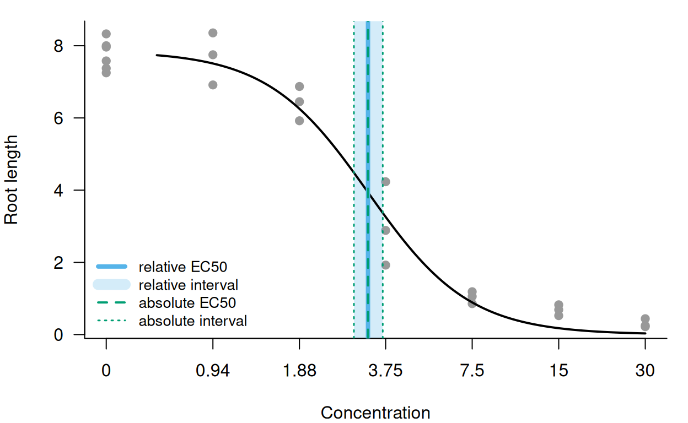

library(toxval)
has_drc <- requireNamespace("drc", quietly = TRUE)Background
An ECx is the concentration at which a fitted response has changed by x per cent, so the EC10 is where it has changed by 10 per cent. Software and guidance differ in what that change is a percentage of, so one fit can give different ECx values (Daniels et al. 2026). ecx() estimates the concentration at which a fitted curve crosses a reference response. The estimate is computed separately for each realisation of the fit (a posterior draw of a Bayesian fit, or a parametric bootstrap replicate of a frequentist fit), and in two directions, a decrease and an increase. The control is the predicted response at the control concentration (by default the lowest concentration in the data, where the grid over which the curve is evaluated starts). The argument proportion gives the proportion (e.g. proportion = 0.1 for the EC10), and the argument type names the span of which the effect is a proportion (i.e. a difference in response, measured separately in each direction as and ). The reference of each realisation is computed from its own control and spans:
Under the default, type = "absolute", both spans of a response that is not a proportion are the control, so the EC10 references are 0.9 and 1.1 times the control. Under type = "direct" there is no proportion and no span, and the response supplied as reference is used as the reference in both directions. The spans of the other types are tabulated under ECx definitions. The decreasing ECx of a realisation is then the first concentration at which its curve passes downward through the decreasing reference, and the increasing ECx is the first at which it passes upward through the increasing reference. ecx() returns the median of these values over the realisations, with a 95 per cent interval by default.
Both directions are sought on each call and returned as rows identified by the direction column (for each curve and proportion, one row for the first decreasing crossing and one for the first increasing crossing), and there is no argument for choosing a direction. A direction in which no realisation crosses is returned with NA estimates, because the crossing was sought and not found.
The examples below use curves defined by formulas with chosen parameter values, so that each ECx has an exact value. ecx() computes on a toxval_pred (the object toxval_predict() builds from a fitted model, with realisations of each curve evaluated over a grid of concentrations), and the object can also be built directly with new_toxval_pred(). We build it with the helper hand_pred(), which evaluates a formula once for each row of a table of parameter values, so that each row stands in for one realisation.
The helper hand_pred()
hand_pred <- function(curve, params, x_vec, family = "gaussian",
asymptote = NULL) {
realisations <- t(apply(params, 1, function(p) {
do.call(curve, c(list(x = x_vec), as.list(p)))
}))
new_toxval_pred(
curves = list(realisations),
keys = data.frame(row.names = 1L),
x_vec = x_vec,
asymptote = asymptote,
meta = list(
source_class = "hand-built",
x_var = "x",
group_var = NULL,
multi_var = NULL,
resolution = length(x_vec),
x_range = range(x_vec),
x_control = x_vec[1],
# the family decides whether the response is a proportion, which sets
# the increasing span under `type = "absolute"`
family = family,
realisation = "draws",
n_realisation = nrow(params),
seed = NULL
)
)
}ECx definitions
The argument type sets what the effect in an ECx is a proportion of, and therefore the response at which the ECx is read. Its four values can give different ECx values from one curve, which we illustrate with one realisation of the exponential decay , evaluated over . Its control is 100, and its lower asymptote (the limit of the response as increases without bound) is 20, which is supplied in the asymptote slot. The curve has no upper asymptote, so that value is NA. Its minimum over the grid is = 23.98.
x_exp <- seq(0, 6, length.out = 601)
decay <- function(x, top, bot, s) bot + (top - bot) * exp(-x / s)
pred_exp <- hand_pred(
decay,
data.frame(top = 100, bot = 20, s = 2),
x_exp,
asymptote = list(list(decreasing = 20, increasing = NA_real_))
)
by_type <- list(
absolute = ecx(pred_exp, proportion = 0.5, type = "absolute"),
relative = ecx(pred_exp, proportion = 0.5, type = "relative"),
range = ecx(pred_exp, proportion = 0.5, type = "range"),
direct = ecx(pred_exp, type = "direct", reference = 40)
)
#> Warning: `type = "relative"` now measures from the control to the asymptote of
#> the curve. Before toxval 2.0.0 it measured to the extent of the curve, which is
#> now `type = "range"`; the two also differ for a non-monotonic curve, because
#> `range` measures from the control rather than from the maximum.
#> Warning: Some realisations have no crossing within the evaluated range, so a reported quantile is at the highest concentration, or have no reference and were excluded. Consider a wider `x_range`.
#> * increasing: 100.0% excluded
ec50_exp <- dplyr::bind_rows(by_type) |>
dplyr::filter(direction == "decreasing") |>
dplyr::select(type, proportion, control, reference, asymptote, estimate)
as.data.frame(ec50_exp)
#> type proportion control reference asymptote estimate
#> 1 absolute 0.5 100 50.00000 NA 1.961662
#> 2 relative 0.5 100 60.00000 20 1.386300
#> 3 range 0.5 100 61.99148 NA 1.289122
#> 4 direct NA NA 40.00000 NA 2.772594The EC50 under each type, with the span, the reference it gives and the exact crossing:
type |
span | reference | exact EC50 | ecx() |
|---|---|---|---|---|
absolute |
control to 0, 100 | 50 | = 1.962 | 1.962 |
relative |
control to the asymptote, 80 | 60 | = 1.386 | 1.386 |
range |
control to the minimum, 76.02 | 61.99 | 1.289 | 1.289 |
direct |
none | 40, supplied | = 2.773 | 2.773 |

type: its control (grey dotted line), the decreasing span (double-headed arrow) to the level it is measured to (grey dotted line), the EC50 reference (dashed line) and the crossing ecx() returns (point, and tick on the concentration axis). direct has no span, and its reference is the supplied response.
In each panel of Figure 1 the arrow runs from the control of 100 down to the level that type measures to (0 under absolute, the asymptote of 20 under relative, and the grid minimum of 23.98 under range). Because the EC50 reference is halfway along the arrow, the shortest span (under range) gives the highest reference, which is crossed first, at 1.29. direct has no span, and its supplied reference of 40 is lower than the other three, so it is crossed last, at 2.77. Each value returned by ecx() in the table agrees with the exact crossing to within one grid step of 0.01.
-
absolute, the default, measures a decrease from the control to 0, so the effect is a percent change in the control level (OECD 2006, paragraph 297), as in the percent inhibition of OECD Test Guideline 201 (OECD 2011, paragraph 50).proportionis not capped at 1 underabsolute, because a response that can be negative (e.g. a growth rate) has more than complete inhibition when it falls below 0, and the equation in paragraph 50 of that guideline places no upper limit on the inhibition. The increasing form is described under An increasing response. -
relativemeasures from the control to the asymptote of the fitted equation (the lower asymptote for a decrease and the upper asymptote for an increase), so the effect is a proportion of the maximum achievable effect. The asymptote is usually a parameter of the equation, and where it is estimated beyond the observed responses it is an extrapolation, whose uncertainty is included in the ECx. -
rangemeasures from the control to the lowest response predicted over the grid (or the highest, for an increase). It therefore depends on the concentrations evaluated; for example, the minimum here, 23.98, is the value at the end of the grid (). -
directtakes no proportion, and the ECx is where the curve crosses the response value supplied asreference, which is used in both directions (i.e. the first downward crossing in the decreasing row and the first upward crossing in the increasing row). Thecontrolcolumn isNA, although the control is still compared with the reference (see Realisations without an ECx).
The names absolute and relative follow Daniels et al. (2026), for whom an absolute ECx is a change relative to the control and a relative ECx is a change relative to the maximum achievable effect. Before toxval 2.0.0, relative measured to the extent of the curve, which is now range, so a call that supplies type = "relative" warns about its definition, whatever the data.
The proportion and reference arguments
Two arguments give the size of the effect: proportion under absolute, relative and range, and reference under direct. proportion accepts several values, each giving its own rows, and the proportion column of the result gives the value for each row. Under type = "direct" the value is a response, not a proportion, so it is supplied as reference (also the name of the column that gives it). reference is required under direct and refused under the other types, whereas proportion is refused under direct, where the proportion column is NA.
ecx(pred_exp, type = "direct")
#> Error in `ecx()`:
#> ! `reference` must be supplied when `type` is 'direct'.
ecx(pred_exp, type = "direct", proportion = 0.5, reference = 40)
#> Error:
#> ! `proportion` must not be supplied when `type` is 'direct'; supply the response value as `reference`.
ecx(pred_exp, proportion = 0.5, reference = 40)
#> Error in `ecx()`:
#> ! `reference` must be NULL unless `type` is 'direct'; the reference is computed from `proportion`.These names differ from those of drc::ED(), whose type = "absolute" is toxval’s direct. drc::ED() takes the response value in respLev (the argument that gives the percentage under its type = "relative"), and its own reference argument chooses between the control and the upper limit as the starting point.
proportion above 1 is refused under relative and range, since the reference would then be beyond the asymptote or the extent of the curve, but it is accepted under absolute. For example, the line over falls to −50, and its EC120 is the crossing of , at .
x_neg <- seq(0, 10, length.out = 501)
pred_neg <- hand_pred(function(x, s) 100 - s * x, data.frame(s = 15), x_neg)
ec120 <- ecx(pred_neg, proportion = 1.2)
ec120[c("direction", "estimate", "proportion", "control", "reference")]
#> # A tibble: 2 × 5
#> # Model: hand-built
#> # Settings: resolution 501 | 1 posterior draw
#> direction estimate proportion control reference
#> <chr> <dbl> <dbl> <dbl> <dbl>
#> 1 decreasing 8 1.2 100 -20
#> 2 increasing NA 1.2 100 220ecx() returns 8.00 for the EC120, with the reference -20.
An increasing response
Some responses increase with concentration (e.g. the proportion of organisms affected). A decrease under absolute is measured against a fall to 0, but an increase has no such end point unless the response is a proportion, so under absolute the span of an increase depends on the kind of response. For a response with no upper bound the span is the control itself, so a 10 per cent increase from a control of 20 is 22. This is relative deviation (EFSA 2022, section 2.6.2; OECD 2006, paragraph 306), the mirror of the decreasing form. For a proportion, however, the span is the distance from the control to 1, so the reference is , which is extra risk (i.e. Abbott’s formula; US EPA 2012).
For example, the straight line was evaluated over as a gaussian response. Its EC10 and EC50 references are 22 and 30, which it crosses at and .
x_inc <- seq(0, 10, length.out = 501)
rise <- function(x, control, slope) control + slope * x
pred_rise <- hand_pred(rise, data.frame(control = 20, slope = 2), x_inc)
ec_rise <- ecx(pred_rise, proportion = c(0.1, 0.5))
ec_rise[c("direction", "estimate", "proportion", "control", "reference")]
#> # A tibble: 4 × 5
#> # Model: hand-built
#> # Settings: resolution 501 | 1 posterior draw
#> direction estimate proportion control reference
#> <chr> <dbl> <dbl> <dbl> <dbl>
#> 1 decreasing NA 0.1 20 18
#> 2 increasing 1 0.1 20 22
#> 3 decreasing NA 0.5 20 10
#> 4 increasing 5 0.5 20 30proportion = c(0.1, 0.5) gives two rows for each value (one per direction). The increasing EC10 and EC50 are 1.00 and 5.00, whereas the decreasing rows have references of 18 and 10 but no estimate, because the curve never falls below its control.
The family recorded in the toxval_pred determines which span applies. A proportion is recognised from the brms families bernoulli, beta, zero_inflated_beta, zero_one_inflated_beta, binomial, beta_binomial and zero_inflated_binomial, and from a drc fit whose type is "binomial". A binomial family is included because toxval_predict() predicts it at one trial, on the proportion scale. To compare relative deviation with extra risk, we built the line twice over the grid above, once as a beta response and once as a gaussian one.
line_params <- data.frame(control = 0.2, slope = 0.08)
pred_beta <- hand_pred(rise, line_params, x_inc, family = "beta")
pred_unbounded <- hand_pred(rise, line_params, x_inc, family = "gaussian")
extra_risk <- ecx(pred_beta, proportion = 0.1)
relative_deviation <- ecx(pred_unbounded, proportion = 0.1)
extra_risk[c("direction", "estimate", "control", "reference")]
#> # A tibble: 2 × 4
#> # Model: hand-built
#> # Settings: resolution 501 | 1 posterior draw
#> direction estimate control reference
#> <chr> <dbl> <dbl> <dbl>
#> 1 decreasing NA 0.2 0.18
#> 2 increasing 1 0.2 0.28
relative_deviation[c("direction", "estimate", "control", "reference")]
#> # A tibble: 2 × 4
#> # Model: hand-built
#> # Settings: resolution 501 | 1 posterior draw
#> direction estimate control reference
#> <chr> <dbl> <dbl> <dbl>
#> 1 decreasing NA 0.2 0.18
#> 2 increasing 0.250 0.2 0.22
ecx() returns (point, and tick on the concentration axis).
The increasing span of the gaussian response runs from the control of 0.2 to twice the control (a span of 0.20), whereas that of the beta response runs from the control to 1 (a span of 0.80; Figure 2). As a proportion, the EC10 reference is = 0.280, crossed at 1.00. As an unbounded response it is = 0.220, crossed at 0.250. Applied to this proportion, relative deviation sets the reference above the control by 10 per cent of the control, which is 2.5 per cent of the increase still possible (from 0.2 to 1), so its EC10 is 0.25 times the extra-risk EC10.
A hormetic response
A hormetic curve (one that rises above its control at low concentrations before it falls) can cross both references, the increasing one on the way up and the decreasing one on the way down. ecx() returns an ECx for each direction, and the example shows how each is read.
We evaluated the quadratic over , which rises from a control of 100 to 120 at and falls to 40 at . Its absolute EC10 references are 110 and 90. The curve crosses 110 on the way up where (at ), and crosses 90 on the way down where (at ).
x_horme <- seq(0, 6, length.out = 601)
hump <- function(x, a) 100 + a * x * (4 - x)
pred_horme <- hand_pred(hump, data.frame(a = 5), x_horme)
ec10_horme <- ecx(pred_horme, proportion = 0.1)
ec10_horme[c("direction", "estimate", "control", "reference")]
#> # A tibble: 2 × 4
#> # Model: hand-built
#> # Settings: resolution 601 | 1 posterior draw
#> direction estimate control reference
#> <chr> <dbl> <dbl> <dbl>
#> 1 decreasing 4.45 100 90
#> 2 increasing 0.586 100 110
ecx() returns (points).
The increasing EC10 is 0.586, against = 0.586, and the decreasing EC10 is 4.45, against = 4.45 (Figure 3). The decreasing EC10 is the first downward crossing of 90, which is beyond the peak at , so the rise above the control does not prevent it from being found. Where only one direction is needed, it can be kept by filtering the result (e.g. dplyr::filter(ec10_horme, direction == "decreasing")).
Realisations without an ECx
A realisation can lack an ECx in a direction in two ways. It is excluded when it has no span in that direction, so that no reference can be set, and it is censored when it has a reference but does not cross it within the grid. How such realisations are treated changes the interval, and sometimes the estimate.
A span is undefined where the asymptote it is measured to is missing, and it counts as zero when it is no larger than rounding error (sqrt(.Machine$double.eps) times the absolute value of the control). The exponential decay of ECx definitions never rises above its control and has no upper asymptote, so its increasing span is undefined under relative and zero under range.
by_type$relative[c("direction", "estimate", "control", "reference")]
#> # A tibble: 2 × 4
#> # Model: hand-built
#> # Settings: resolution 601 | 1 posterior draw
#> direction estimate control reference
#> <chr> <dbl> <dbl> <dbl>
#> 1 decreasing 1.39 100 60
#> 2 increasing NA NA NA
by_type$range[c("direction", "estimate", "control", "reference")]
#> # A tibble: 2 × 4
#> # Model: hand-built
#> # Settings: resolution 601 | 1 posterior draw
#> direction estimate control reference
#> <chr> <dbl> <dbl> <dbl>
#> 1 decreasing 1.29 100 62.0
#> 2 increasing NA 100 NAUnder relative the realisation has no reference and is excluded, so the increasing row has no control or reference, and the call warns that all realisations were excluded from that row. Under range, however, a zero span means that the curve never departs from its control in that direction, so the realisation is censored instead, and the row keeps its control. In either case no realisation has an increasing ECx, so that row is returned with NA estimates. A span of zero or less also arises for a proportion whose control is at or above 1. Such a realisation is excluded, and the row has NA estimates only where no other realisation crosses. A fitted example in which all realisations are excluded, because its span is zero up to rounding error, is given under A fitted model.
A realisation that has a reference but does not reach it by the highest concentration is Inf in the draws column, which ranks it above all crossings. A quantile that falls among such realisations is reported as the highest concentration, and the call warns. Under direct, a realisation with no crossing whose control is already past the reference is placed at the control concentration rather than above the highest. Excluded and censored realisations, and the warning that gives their proportion, are described in vignette("nsec-definition", package = "toxval").
Uncertainty in the control
The control of a fitted curve is uncertain, so it differs from one realisation to the next. An EC10 could therefore be measured against 90 per cent of each realisation’s own control, or against one response shared by all realisations (e.g. 90 per cent of the median control). ecx() uses the first, so the EC10 of a realisation is the concentration at which that realisation has fallen by 10 per cent of its own control.
To show the difference, we constructed three realisations of the line over , with controls of 95, 100 and 105. Each falls to 90 per cent of its own control at .
x_line <- seq(0, 10, length.out = 501)
line <- function(x, control) control * (1 - x / 10)
pred_line <- hand_pred(line, data.frame(control = c(95, 100, 105)), x_line)
ec10_line <- ecx(pred_line, proportion = 0.1, draws = TRUE)
ec10_line[c("direction", "estimate", "conf.low", "conf.high", "control")]
#> # A tibble: 2 × 5
#> # Model: hand-built
#> # Settings: resolution 501 | 3 posterior draws
#> direction estimate conf.low conf.high control
#> <chr> <dbl> <dbl> <dbl> <dbl>
#> 1 decreasing 1 1 1 100
#> 2 increasing NA NA NA 100
ec10_line$draws[[1]]
#> # A tibble: 3 × 2
#> .draw value.draw
#> <int> <dbl>
#> 1 1 1
#> 2 2 1
#> 3 3 1Each realisation crosses its own reference (0.9 × 95, 0.9 × 100 and 0.9 × 105) at (the value.draw column), so the EC10 is 1.00, with an interval of zero width. The control column gives the central quantile of the controls, here the median of 100.
For comparison, one reference of 90 per cent of the median control is 0.9 × 100 = 90. ecx() with type = "direct" (see ECx definitions) finds where each realisation crosses a reference supplied in this way.
fixed_level <- ecx(pred_line, type = "direct", reference = 90, draws = TRUE)
fixed_level$draws[[1]]
#> # A tibble: 3 × 2
#> .draw value.draw
#> <int> <dbl>
#> 1 1 0.526
#> 2 2 1
#> 3 3 1.43
ecx() returns.
With a reference for each realisation (Figure 4, left), the references are 85.5, 90.0, 94.5, and all three are crossed at . The one reference of 90 (Figure 4, right) is a fall of 5 from the control of 95 but of 15 from the control of 105, so the three realisations cross it at 0.526, 1.00, 1.43. The three realisations have the same shape, so this spread of crossings comes only from the spread of their controls.
Sources of the asymptote
Under type = "relative" the effect is measured against the asymptote of the fitted equation, so each realisation needs a value for that asymptote. The value depends on the form of the equation: LL.4() estimates its lower limit, whereas LL.3() fixes it at 0. A fitted model compares the relative and absolute EC50 of a fitted LL.4(). ecx() reads the asymptote from the asymptote slot of the toxval_pred, and refuses the call when there is none.
pred_no_asymptote <- hand_pred(
decay,
data.frame(top = 100, bot = 20, s = 2),
x_exp
)
ecx(pred_no_asymptote, proportion = 0.5, type = "relative")
#> Warning: `type = "relative"` now measures from the control to the asymptote of
#> the curve. Before toxval 2.0.0 it measured to the extent of the curve, which is
#> now `type = "range"`; the two also differ for a non-monotonic curve, because
#> `range` measures from the control rather than from the maximum.
#> Error in `compute_ecx()`:
#> ! `type` must not be 'relative' when `object` supplies no asymptote; supply `asymptote` where the `toxval_predict()` method takes it, or use `type` 'absolute' or 'range'.How toxval_predict() fills the slot depends on the package used to fit the model.
- For a
drcfit,toxval_predict()takes the lower and upper limits of the fitted function fromfct$lowerAs()andfct$upperAs()at each bootstrap replicate, including a limit that the equation fixes (e.g. the lower limit of 0 inLL.3()). - For a
brmsfit, the parameter of a non-linear formula that is an asymptote cannot be read from the fit, so it is named with theasymptoteargument oftoxval_predict(), whichecx()passes on. A parameter named in this way (e.g.asymptote = c(decreasing = "bot")) is taken for each draw on the link scale and transformed to the response scale, whereas a number is taken as a response value. - For a hand-built
toxval_pred, the asymptote is supplied tonew_toxval_pred(), as above. - For a fit from
bayesnec::bnec(),toxval_predict()takes the lower asymptote from thebotparameter of the equation (or 0, for an equation withoutbotwhose family is bounded below), and the upper asymptote as 1 for a proportion. Both are taken only under an identity link, and a fit with any other link has no asymptote in either direction. A direction without an asymptote (e.g. the increasing direction of a gaussian fit) has no span, so its realisations are excluded and its estimate isNA.
Where the realisations come from several equations, as in a model average, each realisation is measured to the asymptote of its own equation. For a bayesmanecfit, the realisations of an equation without an asymptote are excluded with a warning, and the remaining equations are averaged. Because the proportion corresponds to a different response in each equation, a model-averaged relative ECx does not correspond to a single response level.
A fitted model
The examples above are constructed so that each answer is known exactly. For a fitted model the calculation is unchanged, and only the source of the realisations differs. The example compares the relative and absolute EC50 of two equations fitted to the same data: LL.4(), whose lower limit is estimated, and LL.3(), whose lower limit is fixed at 0.
We fitted the LL.4() equation, , to the root lengths of drc::ryegrass with drc::drm(). Its control is the upper limit (since ), and its lower limit is the lower asymptote, so the relative EC50 is the parameter (the concentration at which the response is halfway between and ). The curve at the parameter estimates was first built by hand as a single realisation, with the asymptotes from fct$lowerAs() and fct$upperAs(), and its relative and absolute EC50 were compared with those from drc::ED(). For this equation the type = "relative" of drc::ED() is toxval’s relative, whereas its type = "absolute" is toxval’s direct.
x_rye <- seq(0, 30, length.out = 500)
ll4_curve <- function(x, b, c, d, e) c + (d - c) / (1 + exp(b * (log(x) - log(e))))
pred_ll4 <- hand_pred(
ll4_curve,
as.data.frame(as.list(ll4)),
x_rye,
asymptote = list(list(
decreasing = fit_ll4$fct$lowerAs(coef(fit_ll4)),
increasing = fit_ll4$fct$upperAs(coef(fit_ll4))
))
)
hand_relative <- ecx(pred_ll4, proportion = 0.5, type = "relative")
#> Warning: `type = "relative"` now measures from the control to the asymptote of
#> the curve. Before toxval 2.0.0 it measured to the extent of the curve, which is
#> now `type = "range"`; the two also differ for a non-monotonic curve, because
#> `range` measures from the control rather than from the maximum.
#> Warning: Some realisations have no crossing within the evaluated range, so a reported quantile is at the highest concentration, or have no reference and were excluded. Consider a wider `x_range`.
#> * increasing: 100.0% excluded
hand_absolute <- ecx(pred_ll4, proportion = 0.5, type = "absolute")
ed_relative <- drc::ED(fit_ll4, 50, type = "relative", display = FALSE)
ed_absolute <- drc::ED(fit_ll4, ll4[["d"]] / 2, type = "absolute",
display = FALSE)At the parameter estimates, = 0.481 and = 7.79. The relative EC50 reference is = 4.14, and ecx() returns 3.058, against = 3.058 and 3.058 from drc::ED(). The absolute EC50 reference is = 3.90, which is lower than the relative reference because the curve levels off at , above 0. The absolute EC50 from ecx(), 3.196, agrees with that from drc::ED() at the response (3.196).
Applied to the fit itself, ecx() draws parametric bootstrap replicates of the parameters (1000 by default) and finds the EC50 on each. Both calls below use a seed of 2026, so they compute on the same replicates.
boot_relative <- ecx(fit_ll4, proportion = 0.5, type = "relative", seed = 2026)
#> Warning: `type = "relative"` now measures from the control to the asymptote of
#> the curve. Before toxval 2.0.0 it measured to the extent of the curve, which is
#> now `type = "range"`; the two also differ for a non-monotonic curve, because
#> `range` measures from the control rather than from the maximum.
#> Warning: Some realisations have no crossing within the evaluated range, so a reported quantile is at the highest concentration, or have no reference and were excluded. Consider a wider `x_range`.
#> * increasing: 100.0% excluded
boot_absolute <- ecx(fit_ll4, proportion = 0.5, seed = 2026)
boot_relative[c("direction", "estimate", "conf.low", "conf.high", "reference",
"asymptote")]
#> # A tibble: 2 × 6
#> # Model: drc
#> # Settings: resolution 500 | 1000 bootstrap realisations
#> direction estimate conf.low conf.high reference asymptote
#> <chr> <dbl> <dbl> <dbl> <dbl> <dbl>
#> 1 decreasing 3.05 2.71 3.43 4.14 0.479
#> 2 increasing NA NA NA NA NA
boot_absolute[c("direction", "estimate", "conf.low", "conf.high", "reference")]
#> # A tibble: 2 × 5
#> # Model: drc
#> # Settings: resolution 500 | 1000 bootstrap realisations
#> direction estimate conf.low conf.high reference
#> <chr> <dbl> <dbl> <dbl> <dbl>
#> 1 decreasing 3.19 2.87 3.55 3.90
#> 2 increasing NA NA NA 11.7The relative EC50 is 3.05, with a 95 per cent interval of 2.71 to 3.43, and the absolute EC50 is 3.19 (2.87 to 3.55). Each estimate is the median over the replicates, so it differs from the value at the parameter estimates, although each interval contains that value. The increasing row of the relative call has no estimate, because a decreasing LL.4() curve starts at its upper limit. The span from the control to that limit is therefore zero up to rounding error in each replicate (zero or negative in 975 of the 1000, and positive but below in the other 25). Each of these spans counts as zero, so all replicates are excluded, and the call warns that they were.

LL.4() fit to drc::ryegrass. Top, the root lengths (grey points) and the curve at the parameter estimates (black line), on a log concentration axis with the controls drawn at the tick labelled 0; the grey rectangle is the range enlarged below. Bottom left, the relative (blue) and absolute (green) EC50 at the parameter estimates, from ecx() on the curve (solid lines) and from drc::ED() (dark grey dashed lines), with each reference response (dotted lines in the same colours). Bottom right, the bootstrap EC50 from ecx() on the fit: medians (solid lines) and 95 per cent intervals (dashed lines).
At the parameter estimates the values from ecx() and drc::ED() coincide for each type, and the absolute EC50 is 0.14 higher than the relative EC50 (Figure 5, bottom left). However, each bootstrap interval contains both values at the parameter estimates (compare the bottom panels of Figure 5), so on these data the choice between relative and absolute changes the EC50 by less than the width of either interval.
LL.3() fixes the lower limit at 0, so its relative and absolute ECx should coincide. We also fitted LL.3() to these data, and computed both ECx on the same bootstrap replicates.
fit_ll3 <- drc::drm(rootl ~ conc, data = drc::ryegrass, fct = drc::LL.3())
ll3_relative <- ecx(fit_ll3, proportion = 0.5, type = "relative", seed = 2026)
#> Warning: `type = "relative"` now measures from the control to the asymptote of
#> the curve. Before toxval 2.0.0 it measured to the extent of the curve, which is
#> now `type = "range"`; the two also differ for a non-monotonic curve, because
#> `range` measures from the control rather than from the maximum.
#> Warning: Some realisations have no crossing within the evaluated range, so a reported quantile is at the highest concentration, or have no reference and were excluded. Consider a wider `x_range`.
#> * increasing: 100.0% excluded
ll3_absolute <- ecx(fit_ll3, proportion = 0.5, seed = 2026)
c(relative = ll3_relative$estimate[1], absolute = ll3_absolute$estimate[1])
#> relative absolute
#> 3.255393 3.255393Both EC50 values are 3.26, and the asymptote column of the relative call gives the fixed lower limit of 0.

LL.3() fit to drc::ryegrass: root lengths (grey points) and the curve at the parameter estimates (black line), on a log concentration axis with the controls drawn at the tick labelled 0. The relative EC50 (blue solid line) and its 95 per cent interval (blue band) coincide with the absolute EC50 (green dashed line) and its interval (green dotted lines).
The relative and absolute EC50 therefore coincide in Figure 6, within an interval of 2.91 to 3.66 that is shared by both calls. The LL.3() curve falls to 0.0326 at the highest concentration (30), below the lower limit of the LL.4() fit, because its own lower limit is fixed at 0.
References
Daniels B, Hommen U, Ratte M (2026). Four-parameter nonlinear regression and maximum achievable effect in ecotoxicology: just visually appealing or relevant for risk assessment? Integrated Environmental Assessment and Management 22(3):734-740. https://doi.org/10.1093/inteam/vjaf085
EFSA Scientific Committee (2022). Guidance on the use of the benchmark dose approach in risk assessment. EFSA Journal 20(10):7584. https://doi.org/10.2903/j.efsa.2022.7584
OECD (2006). Current Approaches in the Statistical Analysis of Ecotoxicity Data: A Guidance to Application. Series on Testing and Assessment No. 54, ENV/JM/MONO(2006)18.
OECD (2011). Test No. 201: Freshwater Alga and Cyanobacteria, Growth Inhibition Test. https://doi.org/10.1787/9789264069923-en
US EPA (2012). Benchmark Dose Technical Guidance. EPA/100/R-12/001. Risk Assessment Forum, Washington, DC.
Provenance
This vignette was built with toxval 1.0.0.9000, R version 4.6.2 (2026-10-29) and drc 4.0.0. The hand-built curves are deterministic and written out above, and were evaluated over grids of 500 to 601 values. The LL.4() and LL.3() fits are to drc::ryegrass, with 1000 parametric bootstrap replicates drawn with seed = 2026 over the default grid of 500 values. Each ECx of a hand-built curve was checked against its exact value to within one grid step, because ecx() interpolates linearly between grid values. The bootstrap results of the drc fits have no exact value, so the values at the parameter estimates were checked against drc::ED() instead.